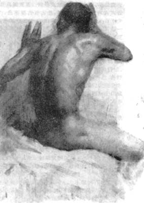
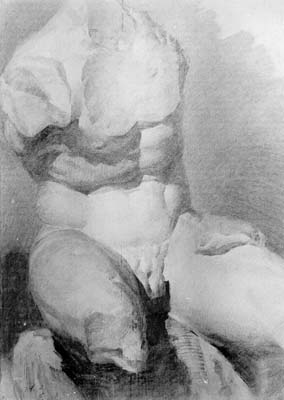

论 素 描 教 学
黄乃源
多年来，素描一直是高等美术院校的重要课程，尽管经历多少次争论、反复，但作为造型艺术的基础训练，素描仍占据很重要的地位。历史上一些有成就的艺术家，无不经历了素描的刻苦训练。艺术巨匠列奥纳多·达·芬奇的艺术作品之所以能够千古留传，除了他渊博的知识和高度的文化素养外，还与他初学绘画时，坚持画蛋和不断进行的素描训练分不开的。卡尔多夫斯基是一位优秀的素描大师，对素描极为重视，他说：“在现实主义的艺术中，素描是基础，是整个造型艺术的基础。一个学生在毕业时可能不一定成为一个好的油画家，但是他必须掌握素描。掌握素描，这是美术教学的实质所在”。我国一批有成就的艺术家，都是经历了刻苦的素描训练的。徐悲鸿在素描上造诣很高，在素描教学上有自己独特的见解，他对青年学生更是强调严格的素描训练。
素描作为绘画基本功应该是画到老，练到老，这对于绘画教师有如体育运动员每日练习基本功，钢琴演奏家天天练习指法、练习曲子一样不可缺少。十九世纪油画大师德拉克洛瓦在他成为著名浪漫派绘画大师之后，还经常画素描石膏像，他这样做正是为了磨练自己的眼和手，使自己经常保持对形体敏锐的观察力和娴熟的造型技巧。
近几年来，在我们的素描教学中，曾经出现过个别教师与少数学生对素描教学有种厌弃或偏激的错误思想，他们常常离开教学大纲的要求，特别是一些青年教师，觉得自己经过了一段时间的素描训练，认为有了一定的素描基础，就不愿再练习素描和速写。但他们却忘记他们今天所以能够运用自如，得心应手的给学生做示范或搞某些创作，是与他们当学生期间训练有素的素描功底息息相关、紧紧相连的。
轻视素描不仅局限于个人的思想，更主要的是贯穿于学生作业中，认为美术学院素描作业训练课程已陈旧过时，应该淘汰。于是在部分学生中，便出现脱离现实主义的艺术，盲目地搞一些所谓的创作，以此来显示自己具有反传统的创造性。这些错误认识的产生，主要是对素描的基本任务模糊不清及对训练方法的具体方法有不同的看法。究其原因有以下几种：首先由于我们的素描教学过于单一，基础训练的单一，影响到创作表现手法上的单一。其次，就是我们在素描教学中过分强调纯客观的如实描写，而忽视了感情的因素，忽视了主观因素的培养，忽视了深入进去，又能跳出来的一种能动的造型能力的培养。当然，也不能不看到，随着艺术观念的变化，创作手法的变化，尤其是现代派及一些抽象艺术，不重形，不要形，因而得出了造型能力的训练无关重要的结论。以上三方面，我认为是当前轻视素描的主要原因。因此在教学中首先必须重视素描，同时又要考虑如何改进素描教学。

我们坚持素描基础训练，决不是要求学生老停留在描摹对象的初级阶段，而是采取：①动态与静态；②默写与写生；③创作与写生相结合的方法。培养学生善于发挥主观能动作用与个性，决不能停留在纯科学地分析研究对象上，应该着重艺术地表现。坚持素描教学决不等于要求学生对对象只进行自然主义的分析，用机械的方法画得和对象一样，不分巨细主次，面面俱到，以至成为素描对象的翻版。而是要求在素描实践中，加以现实主义的分析，通过简练的手法，突出主要部分以表现对象的精神实质、风格特征、结构和运动等本质因素。只有在对自然深刻认识、理解的基础上，才能在复杂的对象面前，不受表象偶然的、非本质的因素所干扰，直接把握对象激发我们美感的实质所在，才有可能对对象进行有效的艺术概括。
写生的过程，基本上是对对象进行观察、表现、再观察、再表现、不断反复的过程，直到使对象在画面上得到充分完美的表现。观察是写生的开始，也是表现的基础。观察物象必然带有绘画者的主观认识、理解和判断，而且要用绘画者创造的形式加以表现。所以，这种表现既要求学生防止机械地临摹眼睛所看到的一切，以罗列代替本质，又要求学生防止形式主义，脱离客观物象实际。这样，才会使画面的物象伴随着认识的不断深化而逐步丰富完善。所以素描决非一般现象的积累和感觉的记录；也不是机械的推理，而是富有创作性的艺术表现作品。
在素描教学实践中，自始至终要求学生整体地观察对象，要看对象与各个局部之间的相互关系，如比例关系、体积关系、结构关系、明暗主次关系等。要大处着眼，表现方法也要大处入手，即先画大轮廓，大结构，找出几个大调子，这样做到心中有数，有条不紊地、层次清晰地画好一幅作品。
另外要求学生善于在长和宽的两度平面上把三度空间的物体表现得突出，使之有体积感和空间感，这也是素描训练的基本任务之一。通过多年的教育实践，我认为素描训练中，必须：(1)指导思想一定要明确；(2)观察一定要从整体出发；(3)形体结构一定要准确；(4)艺术表现一定要强烈；(5)精神实质一定要深刻。基于上述五种“一定”的严格素描训练，将促使学生在创作中发挥个性，从而使风格多样。

素描教学，不仅要培养学生对现实物体的正确观察力和表现力，而且更要重视培养学生的创造性和个性的正常发挥，这是没有异议的。但对初入校的学牛，特别是一年级学生，在没有牢固掌握有科学规律的起码知识的情况下，就片面地追求所谓个性发展，风格多样，这是不实际的。
将素描教学停留在摹拟对象，停留在照相机效果，那将扼杀学生在艺术上的创造性及个性：，这在高年级尤应重视。这一点正是我们过去在教学中忽视的，因此要注意因材施教。在使用工具上不宜要求过死，在表现手法上，不论是以调子为主、或以结构为主、抑或是线面结合，只要是表现形体结构准确、生动，就不应该机械地限定。在表现对象时，在准确的基础上应有所强调。取舍能力也应该注意培养。总之在素描教学中，要培养正确的观察能力和表现能力，真正培养学生能精细、深刻的表现对象的能力，又能掌握取舍、提炼、概括、夸张的造型能力。注重学生在素描基础训练中的个性的表现，将会使学生在今后创作中的风格得到充分的发挥。
(文章摘自《艺术界》1991年第2期 总第18期)